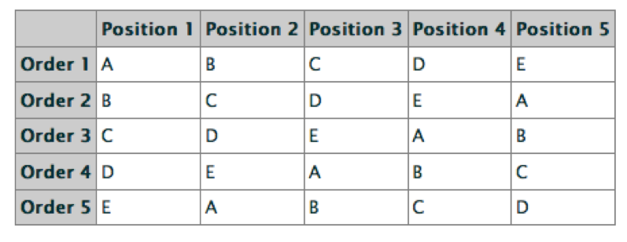

name: title class: middle, center, dark <center> <embed src="images/title.svg" type="image/svg+xml" height="100px" align="center" style="border: 0px solid lightgray;"/> </center> --- name: incBullet class: light # Agenda 1. Design of experiments 1. Factorial designs 1. Interpreting factorial designs 1. Randomization and counterbalancing --- class: light, # Terminology 1. DV (dependent variable) - Measured output value 1. IV (independent variables, factors) - Input variables that can be changed 1. Levels - Specific values of factors (inputs) - Can be continuous or discrete 1. Interaction - Effect of one input factor depends on level of another input factor --- class: light, middle # What are examples of factors? --- class: light, # Design of Experiments 1. Separates total variation observed in a set of measurements into - Systematic variability due to experimental manipulations - Variability to measurement error 1. Goals - Isolate effects of each input variable - Determine effects of interactions - Determine magnitude of experimental error - Obtain maximum information for given effort --- class: light, # Two-factor Experiments 1. Two factors (inputs) - A, B 1. Separate total variation in output values into: - Effect due to A - Effect due to B - Effect due to interaction of A and B (AB) - Experiment error --- class: light, # Is putting a substance in coffee morally permissible? Example from Young et al. (2007) "Neural basis of the interaction between theory and moral judgment". PNAS. [<a href="http://www.pnas.org/content/104/20/8235.full.pdf">PDF</a>] .col1[ <img src="images/young2x2.png" width="300"> ] .col2[ <img src="images/youngresults.png" width="350"> ] --- class: light, # Terminology for factorial designs --- class: light, # Generalized m-factor Experiments .col1[ Effects for 3 factors: **A** **B** **C** **AxB** **AxC** **BxC** **AxBxC** ] .col1[ Effects for 4 factors: **A** **B** **C** **D** **AxB** **AxC** **AxD** **BxC** **BxD** **CxD** **AxBxC** **AxBxD** **…** ] --- class: light, # Interpretation gets difficult! <img src="images/hardtointerpret.png" width="680"> --- class: light # Between vs. Within .infobox[ **Between subject** When the subject is exposed to only a single level of the favors of a design. ] <br> .infobox[ **Within subject** Subject assigned to multiple levels of the the factors in the design (actually, all!) ] <br> .infobox[ **Mixed** Subjects exposes to single level for some factors and multiple levels for other factors. ] --- class: light, middle, center # Counterbalancing and randomization --- class: light # The problem of counterbalancing There are almost always more possible stimulus factors than experimental ones - Left/right position of response buttons - Color of stimulus - What font is used - Order of tasks - Identity of stimulus .infobox[ If these issues are not address they introduce possible **confounds** ] The solution is usually **counterbalancing** which ensures that an irrelevant variable is set one way for one subject, set another way for a different one. --- class: light # Example <img src="images/counterbalanceorder.png" width="680"> --- class: light # Example - Can learners take advantage of the statistical structure of utterances to learn words? .red[golabu].blue[padoti].green[tupiro].purple[bidaku].red[golabu] - Test on .red[golabu] vs. .red[bu].blue[pado] - Have to counterbalance to make sure no general .red[golabu] preference - So, you create another language: .red[bupado].green[titupi].blue[robida].purple[kugola].red[bupado] - Test on .purple[gola].red[bu] versus .red[bupado] .footnote[From Saffran, Aslin, & Newport, 1996 <a href="http://www.bcs.rochester.edu/people/newport/saffran1996.pdf">PDF</a>] --- class: light # It gets crazy to control everything! --- class: light # What can you do? - Incomplete designs (i.e., incomplete counterbalancing) - Latin squares - Other incomplete design - Randomization - More practical these days when you have computers with random number generators in them - Better with a very large N --- class: light # Latin Squares Latin square in an NxN array filled with n different symbols, each occurring exactly once in each row and once in each column.  - The problem is that latin square may not enforce all aspects of randomization. - In addition, really hard for larger designs (more than two factors) --- class: light # Simple randomization .col1[ - For each subject that enters experiment you randomly determine the stimulus factors/configuration by flipping a coin (or using a random number generator in the computer). - Treats stimulus factor as something "beyond your control," just like random aspects of subject (e.g., how sleepy they are, etc...). - Works best in a large sample otherwise you can get confounds due to incomplete sampling ] .col2[ <img src="images/coinflip.jpg" width="150"> ] --- class: light Thanks to Michael Frank (Stanford) for slides.